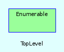

|  |
Methods
Public Instance methods
[ show source ]
# File stdExt.rb, line 20 def average(&b) if self.size>0 #puts "sum: #{self.sum(&b)}" (sum(&b) / size).to_f else 0 end end
calculates the correlation coefficent of the linear regession
requirement: the contents are Arrays itself
[ show source ]
# File stdExt.rb, line 56 def correlate(sample=0) # if self.first.class.is_a? Array # require 'pp' p vSum=self.sum{|x| x.first * x.last } p xyMean = vSum / self.size.to_f p xMean = self.average{|x| x.first} p yMean = self.average{|x| x.last} p xSigma= self.sigma(sample){|x| x.first} p ySigma = self.sigma(sample){|x| x.last} ( xyMean - (xMean * yMean)) / (xSigma * ySigma ) # else # 0 #end end
calculates the standard- deviation
[ show source ]
# File stdExt.rb, line 50 def sigma(sample=0,&b) Math::sqrt( variance(sample,&b)) rescue 0 end
[ show source ]
# File stdExt.rb, line 12 def sum if block_given? inject(0) {|n, i| yield(i).nil? ? n : yield(i) + n } else inject(0) {|n, i| n + i } end end
calculates the variance
if sample is given and is not zero (0), the calculation is based on a sample of the array-elements
[ show source ]
# File stdExt.rb, line 32 def variance(sample=0) if size >1 if block_given? if sample.zero? (size * inject(0){|x, k| x + yield(k) ** 2 } - inject(0){|x, k| x + yield(k) } ** 2).to_f / ( size**2 ) .to_f else (size * inject(0){|x, k| x + yield(k) ** 2 } - inject(0){|x, k| x + yield(k) } ** 2).to_f / (size* (size - 1) ).to_f end else if sample.zero? (size * inject(0){|x, k| x + k ** 2 } - inject(0){|x, k| x +k } ** 2).to_f / (size**2) .to_f else (size * inject(0){|x, k| x + k ** 2 } - inject(0){|x, k| x + k } ** 2).to_f / (size* (size - 1) ).to_f end end end end